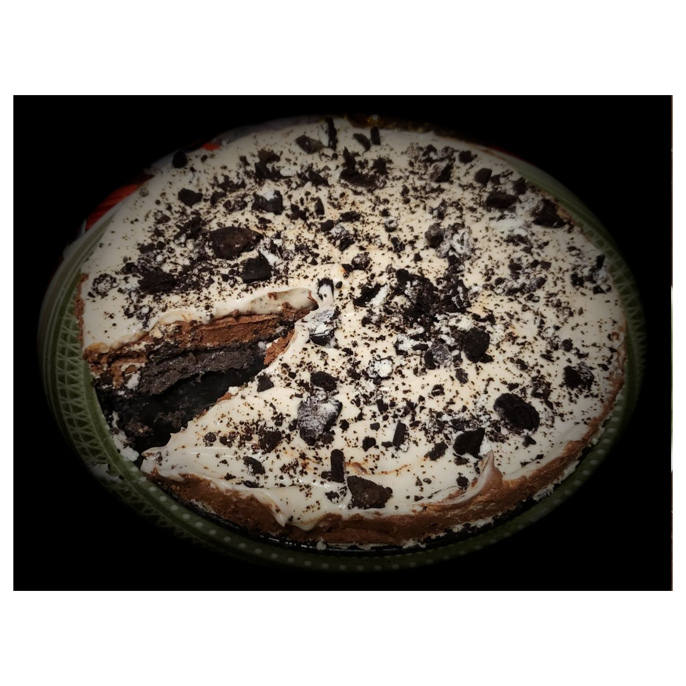

Oreo cake

Oreo cake, no oven needed!
Oreo cake has been a hit for over a decade here in Norway, and I finally got around to making it! I made mine with gluten free Oreos from the store and without lactose because of allergies and it turned out great!
I made half a batch of a recipe I found. I recommend making it a day in advance, as it will be easier to serve when chilled for an extensive time.
I used a 15 cm spring form cake pan.
Ingredients
- 300 gr Oreos
- 50 gr melted butter
- 3 dl cream
- 2 tbsp powdered sugar
- 100 gr dark chocolate
- 160 gr powdered sugar
- 110 gr Philadelphia
- 2 eggs
Steps
- Finely crush 170 gr Oreos and mix with melted butter. Place the mix in the bottom of the spring form
- Whip 2 dl cream with 2 tbsp sugar.
- Whisk Philadelphia with 80 gr powdered sugar, then whisk in half of the cream from the previous step. Pour this mix in the spring form and crush half of the remaining Oreos evenly on top of it.
- Whip 1 dl cream. Melt the chocolate using a water bath. Add 2 yolks and stir until even.
- Whip 2 egg whites with 80 gr powdered sugar. add the Whipped cream and chocolate/egg mix from the previous step.
- Add the chocolate mousse to the spring form, then the rest of the whipped cream you saved in step 3.
- Decorate the top of the cake with the remaining Oreos as you please, crushed or whole
- Refrigerate and be patient! Let the cake become a better version of itself, at least over night. You won't regret it!